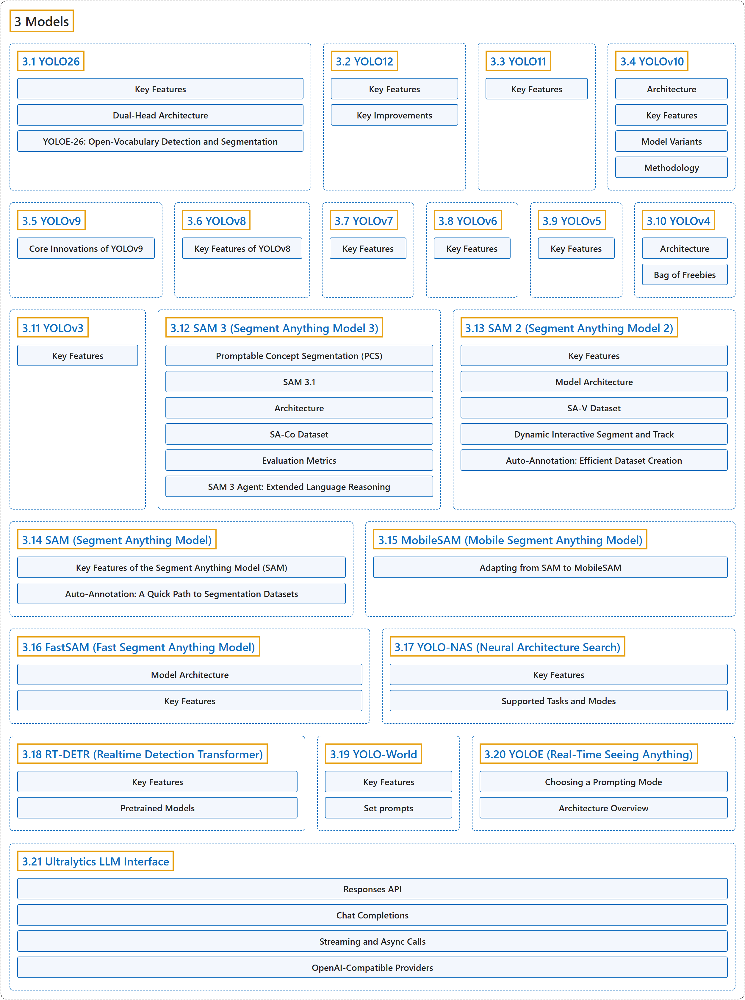

3. Models
Classification

Glossary
| Term | Definition | 中文翻译 | Source |
|---|---|---|---|
| 3 Models 模型 |
(context) "We offer support for a wide range of models, each tailored to specific tasks like object detection, instance segmentation, semantic segmentation, depth estimation, image classification, pose estimation, and oriented bounding boxes." | （语境）我们支持多种模型，每种都针对特定任务而设计，如目标检测、实例分割、语义分割、深度估计、图像分类、姿态估计和旋转边界框。 | Ultralytics, n.d.-f, "Models Supported by Ultralytics", para. 1 |
| 3.1 YOLO26 YOLO26 |
"YOLO26 is a unified family of real-time vision models described in the Ultralytics YOLO26 paper." | YOLO26 是 Ultralytics YOLO26 论文中描述的一个统一的实时视觉模型家族。 | Ultralytics, n.d.-l, "Ultralytics YOLO26", para. 1 |
| 3.2 YOLO12 YOLO12 |
"YOLO12, released in early 2025, introduces an attention-centric architecture that departs from the traditional CNN-based approaches used in previous YOLO models, yet retains the real-time inference speed essential for many applications." | YOLO12 于 2025 年初发布，引入了以注意力为中心的架构，不同于以往 YOLO 模型使用的传统 CNN 方法，同时保留了许多应用所需的实时推理速度。 | Ultralytics, n.d.-p, "YOLO12: Attention-Centric Object Detection", para. 1 |
| 3.3 YOLO11 YOLO11 |
(context) "Released September 2024. Current stable release and the recommended choice for all use cases." | （语境）2024 年 9 月发布。当前的稳定版本，所有用例的推荐选择。 | Ultralytics, n.d.-k, "Ultralytics YOLO11", para. 1 |
| 3.4 YOLOv10 YOLOv10 |
"YOLOv10, released in May 2024 and built on the Ultralytics Python package by researchers at Tsinghua University, introduces a new approach to real-time object detection, addressing both the post-processing and model architecture deficiencies found in previous YOLO versions." | YOLOv10 于 2024 年 5 月发布，由清华大学的研究人员基于 Ultralytics Python 包构建，提出了一种新的实时目标检测方法，同时解决了以往 YOLO 版本在后处理和模型架构上的不足。 | Ultralytics, n.d.-r, "YOLOv10: Real-Time End-to-End Object Detection", para. 1 |
| 3.5 YOLOv9 YOLOv9 |
"YOLOv9 marks a significant advancement in real-time object detection, introducing groundbreaking techniques such as Programmable Gradient Information (PGI) and the Generalized Efficient Layer Aggregation Network (GELAN)." | YOLOv9 标志着实时目标检测的重大进步，引入了可编程梯度信息（PGI）和广义高效层聚合网络（GELAN）等开创性技术。 | Ultralytics, n.d.-v, "YOLOv9: A Leap Forward in Object Detection Technology", para. 1 |
| 3.6 YOLOv8 YOLOv8 |
(context) "Released January 2023. Proven and widely adopted with extensive community support." | （语境）2023 年 1 月发布。久经验证、广泛采用，社区支持丰富。 | Ultralytics, n.d.-b, "Explore Ultralytics YOLOv8", para. 1 |
| 3.7 YOLOv7 YOLOv7 |
"YOLOv7, released in July 2022, was a significant advancement in real-time object detection at its time of release." | YOLOv7 于 2022 年 7 月发布，在发布时是实时目标检测的一项重大进步。 | Ultralytics, n.d.-u, "YOLOv7: Trainable Bag-of-Freebies", para. 1 |
| 3.8 YOLOv6 YOLOv6 |
"Meituan YOLOv6, released in 2022, offers a strong balance between speed and accuracy, making it a popular choice for real-time applications." | 美团 YOLOv6 于 2022 年发布，在速度和精度之间取得了很好的平衡，因此常用于实时应用。 | Ultralytics, n.d.-d, "Meituan YOLOv6", para. 1 |
| 3.9 YOLOv5 YOLOv5 |
(context) "Released June 2020. The foundational PyTorch implementation, battle-tested across millions of deployments." | （语境）2020 年 6 月发布。奠基性的 PyTorch 实现，经过数百万次部署的实战检验。 | Ultralytics, n.d.-m, "Ultralytics YOLOv5", para. 1 |
| 3.10 YOLOv4 YOLOv4 |
"YOLOv4 is designed to provide the optimal balance between speed and accuracy, making it an excellent choice for many applications." | YOLOv4 旨在提供速度与精度之间的最佳平衡，因此是许多应用的绝佳选择。 | Ultralytics, n.d.-t, "YOLOv4: High-Speed and Precise Object Detection", para. 1 |
| 3.11 YOLOv3 YOLOv3 |
(context) "This document presents an overview of three closely related object detection models, namely YOLOv3, YOLOv3-Ultralytics, and YOLOv3u." | （语境）本文档概述三个密切相关的目标检测模型，即 YOLOv3、YOLOv3-Ultralytics 和 YOLOv3u。 | Ultralytics, n.d.-s, "YOLOv3 and YOLOv3u", para. 1 |
| 3.12 SAM 3 (Segment Anything Model 3) SAM 3（分割一切模型 3） |
"SAM 3 (Segment Anything Model 3) is Meta's released foundation model for Promptable Concept Segmentation (PCS)." | SAM 3（分割一切模型 3）是 Meta 发布的、用于可提示概念分割（PCS）的基础模型。 | Ultralytics, n.d.-h, "SAM 3: Segment Anything with Concepts", para. 1 |
| 3.13 SAM 2 (Segment Anything Model 2) SAM 2（分割一切模型 2） |
"SAM 2 builds upon the original SAM with video segmentation capabilities." | SAM 2 在原始 SAM 的基础上增加了视频分割能力。 | Ultralytics, n.d.-g, "SAM 2: Segment Anything Model 2", para. 1 |
| 3.14 SAM (Segment Anything Model) SAM（分割一切模型） |
"This is the original SAM model from Meta." | 这是 Meta 推出的原始 SAM 模型。 | Ultralytics, n.d.-i, "Segment Anything Model (SAM)", para. 1 |
| 3.15 MobileSAM (Mobile Segment Anything Model) MobileSAM（移动端分割一切模型） |
"MobileSAM is a compact, efficient image segmentation model purpose-built for mobile and edge devices." | MobileSAM 是一个专为移动和边缘设备打造的紧凑、高效的图像分割模型。 | Ultralytics, n.d.-e, "Mobile Segment Anything (MobileSAM)", para. 1 |
| 3.16 FastSAM (Fast Segment Anything Model) FastSAM（快速分割一切模型） |
"The Fast Segment Anything Model (FastSAM) is a novel, real-time CNN-based solution for the Segment Anything task." | 快速分割一切模型（FastSAM）是一种新颖的、基于 CNN 的实时方案，用于“分割一切”任务。 | Ultralytics, n.d.-c, "Fast Segment Anything Model (FastSAM)", para. 1 |
| 3.17 YOLO-NAS (Neural Architecture Search) YOLO-NAS（神经架构搜索） |
"Developed by Deci AI, YOLO-NAS is a groundbreaking object detection foundational model." | YOLO-NAS 由 Deci AI 开发，是一个开创性的目标检测基础模型。 | Ultralytics, n.d.-n, "YOLO-NAS", para. 2 |
| 3.18 RT-DETR (Realtime Detection Transformer) RT-DETR（实时检测 Transformer） |
"Real-Time Detection Transformer (RT-DETR), developed by Baidu, is a cutting-edge end-to-end object detector that provides real-time performance while maintaining high accuracy." | 实时检测 Transformer（RT-DETR）由百度开发，是一种前沿的端到端目标检测器，在保持高精度的同时提供实时性能。 | Ultralytics, n.d.-a, "Baidu's RT-DETR: A Vision Transformer -Based Real-Time Object Detector", para. 1 |
| 3.19 YOLO-World YOLO-World |
"The YOLO-World Model introduces an advanced, real-time Ultralytics YOLOv8-based approach for Open-Vocabulary Detection tasks." | YOLO-World 模型提出了一种先进的、基于 Ultralytics YOLOv8 的实时方法，用于开放词汇检测任务。 | Ultralytics, n.d.-o, "YOLO-World Model", para. 1 |
| 3.20 YOLOE (Real-Time Seeing Anything) YOLOE（实时看见一切） |
"Ultralytics YOLOE (Real-Time Seeing Anything) is an open-vocabulary detection and instance segmentation model: instead of a class list fixed at training time, it takes the categories you want at inference time, as a text prompt, a visual example, or a built-in 4,585-name vocabulary." | Ultralytics YOLOE（实时看见一切）是一个开放词汇的检测和实例分割模型：它不用训练时固定的类别表，而是在推理时接收你想要的类别，形式可以是文本提示、视觉示例或内置的 4,585 个名称的词表。 | Ultralytics, n.d.-q, "YOLOE: Real-Time Open-Vocabulary Detection and Segmentation", para. 1 |
| 3.21 Ultralytics LLM Interface Ultralytics LLM 接口 |
"LLM is a small interface for calling language and vision models through an OpenAI-compatible API." | LLM 是一个小型接口，通过兼容 OpenAI 的 API 调用语言模型和视觉模型。 | Ultralytics, n.d.-j, "Ultralytics LLM Interface", para. 1 |
References
Ultralytics. (n.d.-a). Baidu's RT-DETR: A Vision Transformer -Based Real-Time Object Detector. Ultralytics YOLO Docs (ultralytics 8.4.194). Retrieved October 31, 2026, from https://docs.ultralytics.com/models/rtdetr/
Ultralytics. (n.d.-b). Explore Ultralytics YOLOv8. Ultralytics YOLO Docs (ultralytics 8.4.194). Retrieved October 31, 2026, from https://docs.ultralytics.com/models/yolov8/
Ultralytics. (n.d.-c). Fast Segment Anything Model (FastSAM). Ultralytics YOLO Docs (ultralytics 8.4.194). Retrieved October 31, 2026, from https://docs.ultralytics.com/models/fast-sam/
Ultralytics. (n.d.-d). Meituan YOLOv6. Ultralytics YOLO Docs (ultralytics 8.4.194). Retrieved October 31, 2026, from https://docs.ultralytics.com/models/yolov6/
Ultralytics. (n.d.-e). Mobile Segment Anything (MobileSAM). Ultralytics YOLO Docs (ultralytics 8.4.194). Retrieved October 31, 2026, from https://docs.ultralytics.com/models/mobile-sam/
Ultralytics. (n.d.-f). Models Supported by Ultralytics. Ultralytics YOLO Docs (ultralytics 8.4.194). Retrieved October 31, 2026, from https://docs.ultralytics.com/models/
Ultralytics. (n.d.-g). SAM 2: Segment Anything Model 2. Ultralytics YOLO Docs (ultralytics 8.4.194). Retrieved October 31, 2026, from https://docs.ultralytics.com/models/sam-2/
Ultralytics. (n.d.-h). SAM 3: Segment Anything with Concepts. Ultralytics YOLO Docs (ultralytics 8.4.194). Retrieved October 31, 2026, from https://docs.ultralytics.com/models/sam-3/
Ultralytics. (n.d.-i). Segment Anything Model (SAM). Ultralytics YOLO Docs (ultralytics 8.4.194). Retrieved October 31, 2026, from https://docs.ultralytics.com/models/sam/
Ultralytics. (n.d.-j). Ultralytics LLM Interface. Ultralytics YOLO Docs (ultralytics 8.4.194). Retrieved October 31, 2026, from https://docs.ultralytics.com/models/llm/
Ultralytics. (n.d.-k). Ultralytics YOLO11. Ultralytics YOLO Docs (ultralytics 8.4.194). Retrieved October 31, 2026, from https://docs.ultralytics.com/models/yolo11/
Ultralytics. (n.d.-l). Ultralytics YOLO26. Ultralytics YOLO Docs (ultralytics 8.4.194). Retrieved October 31, 2026, from https://docs.ultralytics.com/models/yolo26/
Ultralytics. (n.d.-m). Ultralytics YOLOv5. Ultralytics YOLO Docs (ultralytics 8.4.194). Retrieved October 31, 2026, from https://docs.ultralytics.com/models/yolov5/
Ultralytics. (n.d.-n). YOLO-NAS. Ultralytics YOLO Docs (ultralytics 8.4.194). Retrieved October 31, 2026, from https://docs.ultralytics.com/models/yolo-nas/
Ultralytics. (n.d.-o). YOLO-World Model. Ultralytics YOLO Docs (ultralytics 8.4.194). Retrieved October 31, 2026, from https://docs.ultralytics.com/models/yolo-world/
Ultralytics. (n.d.-p). YOLO12: Attention-Centric Object Detection. Ultralytics YOLO Docs (ultralytics 8.4.194). Retrieved October 31, 2026, from https://docs.ultralytics.com/models/yolo12/
Ultralytics. (n.d.-q). YOLOE: Real-Time Open-Vocabulary Detection and Segmentation. Ultralytics YOLO Docs (ultralytics 8.4.194). Retrieved October 31, 2026, from https://docs.ultralytics.com/models/yoloe/
Ultralytics. (n.d.-r). YOLOv10: Real-Time End-to-End Object Detection. Ultralytics YOLO Docs (ultralytics 8.4.194). Retrieved October 31, 2026, from https://docs.ultralytics.com/models/yolov10/
Ultralytics. (n.d.-s). YOLOv3 and YOLOv3u. Ultralytics YOLO Docs (ultralytics 8.4.194). Retrieved October 31, 2026, from https://docs.ultralytics.com/models/yolov3/
Ultralytics. (n.d.-t). YOLOv4: High-Speed and Precise Object Detection. Ultralytics YOLO Docs (ultralytics 8.4.194). Retrieved October 31, 2026, from https://docs.ultralytics.com/models/yolov4/
Ultralytics. (n.d.-u). YOLOv7: Trainable Bag-of-Freebies. Ultralytics YOLO Docs (ultralytics 8.4.194). Retrieved October 31, 2026, from https://docs.ultralytics.com/models/yolov7/
Ultralytics. (n.d.-v). YOLOv9: A Leap Forward in Object Detection Technology. Ultralytics YOLO Docs (ultralytics 8.4.194). Retrieved October 31, 2026, from https://docs.ultralytics.com/models/yolov9/